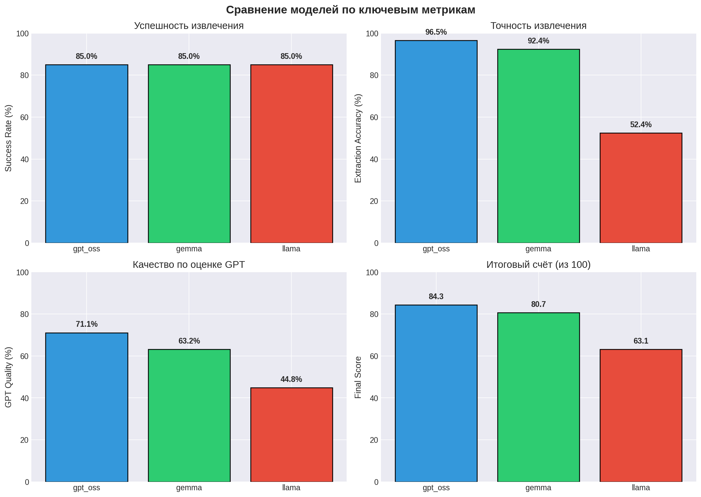
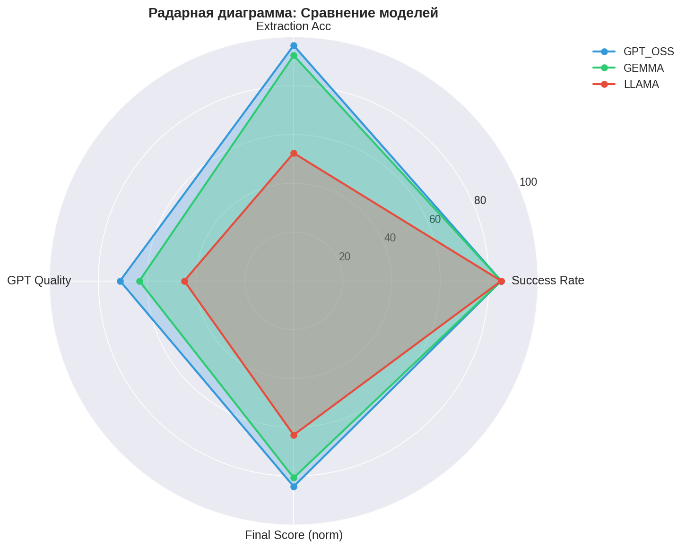
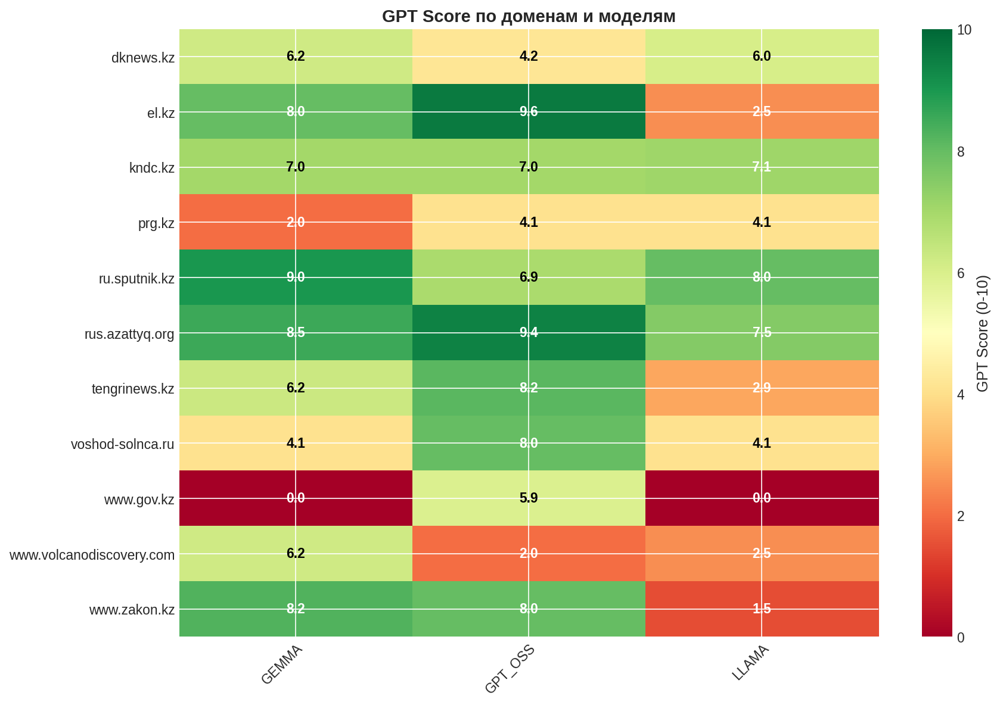
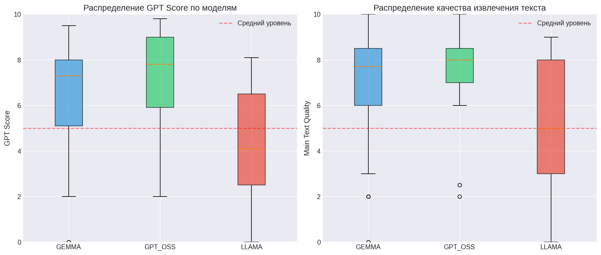
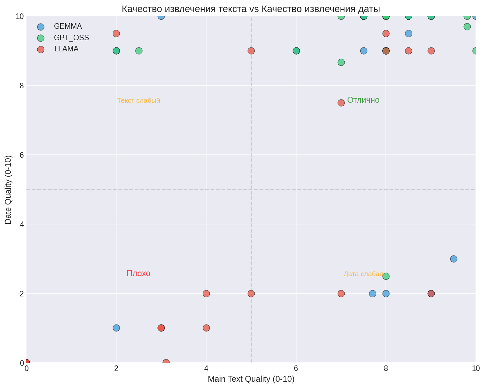
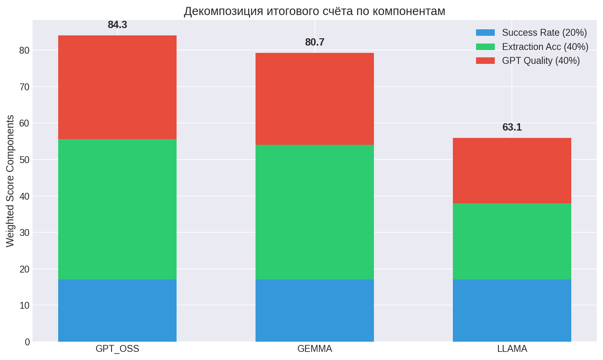
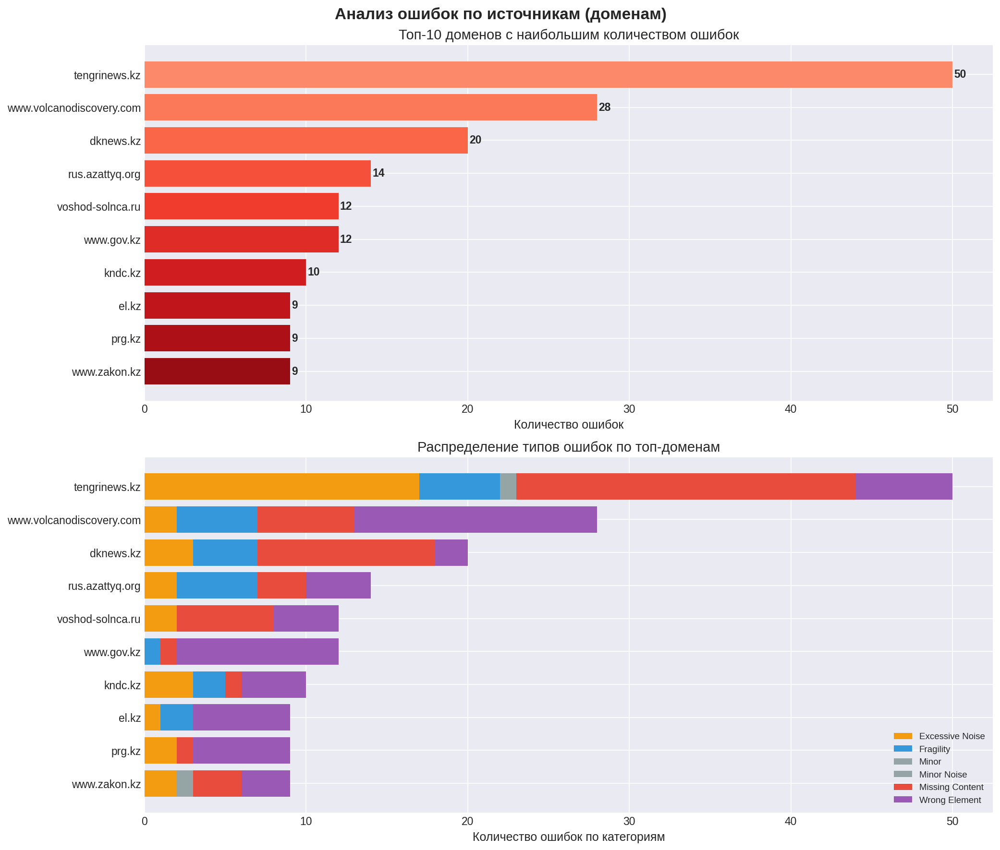

| Модель | Success Rate | Extraction Acc | GPT Quality | Final Score |
|---|---|---|---|---|
| GPT_OSS | 85.0% | 96.5% | 71.1% | 84.26 |
| GEMMA | 85.0% | 92.4% | 63.2% | 80.68 |
| LLAMA | 85.0% | 52.4% | 44.8% | 63.13 |







Топ-10 доменов с наибольшим количеством ошибок в селекторах
| Домен | Всего ошибок | Штраф (баллы) | Распределение по категориям |
|---|---|---|---|
| tengrinews.kz | 50 | -64.5 | Excessive Noise: 17, Fragility: 5, Minor Noise: 1, Missing Content: 21, Wrong Element: 6 |
| www.volcanodiscovery.com | 28 | -44.5 | Excessive Noise: 2, Fragility: 5, Missing Content: 6, Wrong Element: 15 |
| dknews.kz | 20 | -25.5 | Excessive Noise: 3, Fragility: 4, Missing Content: 11, Wrong Element: 2 |
| rus.azattyq.org | 14 | -4.5 | Excessive Noise: 2, Fragility: 5, Missing Content: 3, Wrong Element: 4 |
| voshod-solnca.ru | 12 | -19.0 | Excessive Noise: 2, Missing Content: 6, Wrong Element: 4 |
| www.gov.kz | 12 | -20.5 | Fragility: 1, Missing Content: 1, Wrong Element: 10 |
| kndc.kz | 10 | -10.5 | Excessive Noise: 3, Fragility: 2, Missing Content: 1, Wrong Element: 4 |
| el.kz | 9 | -14.0 | Excessive Noise: 1, Fragility: 2, Wrong Element: 6 |
| prg.kz | 9 | -7.0 | Excessive Noise: 2, Missing Content: 1, Wrong Element: 6 |
| www.zakon.kz | 9 | -12.5 | Excessive Noise: 2, Minor: 1, Missing Content: 3, Wrong Element: 3 |
| Домен | Text Length | Extraction Score | GPT Score | Main Text Quality | Date Quality |
|---|---|---|---|---|---|
| dknews.kz | 9174 | 1.00 | 5.1 | 3.0 | 10.0 |
| tengrinews.kz | 2607 | 1.00 | 7.6 | 8.5 | 10.0 |
| voshod-solnca.ru | 2189 | 1.00 | 4.1 | 2.0 | 9.0 |
| www.volcanodiscovery.com | 12258 | 1.00 | 6.2 | 8.0 | 2.0 |
| el.kz | 3092 | 1.00 | 8.0 | 9.5 | 3.0 |
| rus.azattyq.org | 4448 | 1.00 | 8.2 | 7.5 | 10.0 |
| www.zakon.kz | 5024 | 1.00 | 8.2 | 7.5 | 10.0 |
| dknews.kz | 2120 | 1.00 | 7.3 | 9.0 | 10.0 |
| rus.azattyq.org | 5958 | 1.00 | 7.8 | 8.0 | 9.0 |
| tengrinews.kz | 1647 | 1.00 | 3.4 | 6.0 | 9.0 |
| prg.kz | 1001 | 1.00 | 2.0 | 0.0 | 0.0 |
| tengrinews.kz | 8283 | 0.70 | 6.0 | 7.7 | 2.0 |
| ru.sputnik.kz | 1946 | 1.00 | 9.0 | 8.5 | 9.5 |
| rus.azattyq.org | 967 | 1.00 | 9.5 | 10.0 | 10.0 |
| www.gov.kz | 0 | 0.30 | 0.0 | 2.0 | 1.0 |
| kndc.kz | 3355 | 0.70 | 7.0 | 9.0 | 2.0 |
| tengrinews.kz | 904 | 1.00 | 8.0 | 7.5 | 9.0 |
| Домен | Text Length | Extraction Score | GPT Score | Main Text Quality | Date Quality |
|---|---|---|---|---|---|
| dknews.kz | 3586 | 1.00 | 2.9 | 7.0 | 10.0 |
| tengrinews.kz | 1122 | 1.00 | 7.8 | 8.0 | 9.0 |
| voshod-solnca.ru | 2085 | 1.00 | 8.0 | 8.5 | 10.0 |
| www.volcanodiscovery.com | 12227 | 1.00 | 2.0 | 2.5 | 9.0 |
| el.kz | 3092 | 1.00 | 9.6 | 9.8 | 9.7 |
| rus.azattyq.org | 2087 | 1.00 | 9.8 | 9.8 | 10.0 |
| www.zakon.kz | 4807 | 1.00 | 8.0 | 8.0 | 10.0 |
| dknews.kz | 2114 | 0.70 | 5.5 | 7.0 | 8.7 |
| rus.azattyq.org | 3251 | 1.00 | 9.0 | 8.0 | 10.0 |
| tengrinews.kz | 649 | 0.70 | 7.5 | 7.5 | 10.0 |
| prg.kz | 1811 | 1.00 | 4.1 | 2.0 | 9.0 |
| tengrinews.kz | 994 | 1.00 | 8.0 | 8.0 | 10.0 |
| ru.sputnik.kz | 901 | 1.00 | 6.9 | 6.0 | 9.0 |
| rus.azattyq.org | 1016 | 1.00 | 9.5 | 10.0 | 9.0 |
| www.gov.kz | 904 | 1.00 | 5.9 | 8.0 | 2.5 |
| kndc.kz | 3312 | 1.00 | 7.0 | 8.0 | 9.0 |
| tengrinews.kz | 778 | 1.00 | 9.3 | 9.0 | 10.0 |
| Домен | Text Length | Extraction Score | GPT Score | Main Text Quality | Date Quality |
|---|---|---|---|---|---|
| dknews.kz | 8588 | 1.00 | 6.3 | 8.0 | 9.0 |
| tengrinews.kz | 4196 | 0.70 | 1.5 | 3.0 | 1.0 |
| voshod-solnca.ru | 0 | 0.30 | 4.1 | 2.0 | 9.5 |
| www.volcanodiscovery.com | 0 | 0.00 | 2.5 | 3.0 | 1.0 |
| el.kz | 44 | 0.00 | 2.5 | 4.0 | 1.0 |
| rus.azattyq.org | 2395 | 0.70 | 8.0 | 9.0 | 2.0 |
| www.zakon.kz | 0 | 0.00 | 1.5 | 0.0 | 0.0 |
| dknews.kz | 2148 | 0.70 | 5.8 | 8.0 | 9.5 |
| rus.azattyq.org | 6809 | 1.00 | 8.1 | 8.5 | 9.0 |
| tengrinews.kz | 2763 | 0.70 | 2.2 | 3.1 | 0.0 |
| prg.kz | 1810 | 0.70 | 4.1 | 5.0 | 2.0 |
| tengrinews.kz | 8439 | 0.70 | 4.5 | 7.0 | 2.0 |
| ru.sputnik.kz | 1727 | 0.70 | 8.0 | 5.0 | 9.0 |
| rus.azattyq.org | 1190 | 1.00 | 6.5 | 9.0 | 9.0 |
| www.gov.kz | 0 | 0.00 | 0.0 | 0.0 | 0.0 |
| kndc.kz | 0 | 0.00 | 7.1 | 7.0 | 7.5 |
| tengrinews.kz | 2735 | 0.70 | 3.4 | 4.0 | 2.0 |